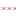

<!doctype html>
<html lang="en">
    <head>
        <meta charset="utf-8">
        <meta http-equiv="X-UA-Compatible" content="IE=edge">
        <meta name="viewport" content="initial-scale=1,user-scalable=no,maximum-scale=1,width=device-width">
        <meta name="mobile-web-app-capable" content="yes">
        <meta name="apple-mobile-web-app-capable" content="yes">
        <link rel="stylesheet" href="css/leaflet.css">
        <link rel="stylesheet" href="css/qgis2web.css">
        <link rel="stylesheet" href="css/leaflet-search.css">
        <link rel="stylesheet" href="css/leaflet-measure.css">
        <style>
        #map {
            width: 1708px;
            height: 947px;
        }
        </style>
        <title></title>
    </head>
    <body>
        <div id="map">
        </div>
        <script src="js/qgis2web_expressions.js"></script>
        <script src="js/leaflet.js"></script>
        <script src="js/multi-style-layer.js"></script>
        <script src="js/leaflet.rotatedMarker.js"></script>
        <script src="js/leaflet.pattern.js"></script>
        <script src="js/leaflet-hash.js"></script>
        <script src="js/Autolinker.min.js"></script>
        <script src="js/rbush.min.js"></script>
        <script src="js/labelgun.min.js"></script>
        <script src="js/labels.js"></script>
        <script src="js/leaflet-measure.js"></script>
        <script src="js/leaflet-search.js"></script>
        <script src="data/Quartier_0.js"></script>
        <script src="data/VOIRIE_1.js"></script>
        <script src="data/Dakar_2.js"></script>
        <script>
        var highlightLayer;
        function highlightFeature(e) {
            highlightLayer = e.target;
            highlightLayer.openPopup();
        }
        var map = L.map('map', {
            zoomControl:true, maxZoom:28, minZoom:1
        })
        var hash = new L.Hash(map);
        map.attributionControl.addAttribution('<a href="https://github.com/tomchadwin/qgis2web" target="_blank">qgis2web</a>');
        var measureControl = new L.Control.Measure({
            primaryLengthUnit: 'meters',
            secondaryLengthUnit: 'kilometers',
            primaryAreaUnit: 'sqmeters',
            secondaryAreaUnit: 'hectares'
        });
        measureControl.addTo(map);
        var bounds_group = new L.featureGroup([]);
        var basemap0 = L.tileLayer('http://{s}.tile.openstreetmap.org/{z}/{x}/{y}.png', {
            attribution: '&copy; <a href="http://openstreetmap.org">OpenStreetMap</a> contributors,<a href="http://creativecommons.org/licenses/by-sa/2.0/">CC-BY-SA</a>',
            maxZoom: 28
        });
        basemap0.addTo(map);
        function setBounds() {
            if (bounds_group.getLayers().length) {
                map.fitBounds(bounds_group.getBounds());
            }
            map.setMaxBounds(map.getBounds());
        }
        function pop_Quartier_0(feature, layer) {
            layer.on({
                mouseout: function(e) {
                    if (typeof layer.closePopup == 'function') {
                        layer.closePopup();
                    } else {
                        layer.eachLayer(function(feature){
                            feature.closePopup()
                        });
                    }
                },
                mouseover: highlightFeature,
            });
            var popupContent = '<table>\
                    <tr>\
                        <td colspan="2"><strong>QRT</strong><br />' + (feature.properties['QRT'] !== null ? Autolinker.link(String(feature.properties['QRT'])) : '') + '</td>\
                    </tr>\
                    <tr>\
                        <th scope="row">REG</th>\
                        <td>' + (feature.properties['REG'] !== null ? Autolinker.link(String(feature.properties['REG'])) : '') + '</td>\
                    </tr>\
                    <tr>\
                        <th scope="row">DEPT</th>\
                        <td>' + (feature.properties['DEPT'] !== null ? Autolinker.link(String(feature.properties['DEPT'])) : '') + '</td>\
                    </tr>\
                    <tr>\
                        <th scope="row">CAV</th>\
                        <td>' + (feature.properties['CAV'] !== null ? Autolinker.link(String(feature.properties['CAV'])) : '') + '</td>\
                    </tr>\
                    <tr>\
                        <th scope="row">CCRCA</th>\
                        <td>' + (feature.properties['CCRCA'] !== null ? Autolinker.link(String(feature.properties['CCRCA'])) : '') + '</td>\
                    </tr>\
                </table>';
            layer.bindPopup(popupContent, {maxHeight: 400});
        }

        function style_Quartier_0_0() {
            return {
                pane: 'pane_Quartier_0',
                opacity: 1,
                color: 'rgba(0,0,0,1.0)',
                dashArray: '',
                lineCap: 'butt',
                lineJoin: 'miter',
                weight: 1.0, 
                fillOpacity: 0,
            }
        }
        map.createPane('pane_Quartier_0');
        map.getPane('pane_Quartier_0').style.zIndex = 400;
        map.getPane('pane_Quartier_0').style['mix-blend-mode'] = 'normal';
        var layer_Quartier_0 = new L.geoJson(json_Quartier_0, {
            attribution: '<a href=""></a>',
            pane: 'pane_Quartier_0',
            onEachFeature: pop_Quartier_0,
            style: style_Quartier_0_0,
        });
        bounds_group.addLayer(layer_Quartier_0);
        map.addLayer(layer_Quartier_0);
        function pop_VOIRIE_1(feature, layer) {
            layer.on({
                mouseout: function(e) {
                    if (typeof layer.closePopup == 'function') {
                        layer.closePopup();
                    } else {
                        layer.eachLayer(function(feature){
                            feature.closePopup()
                        });
                    }
                },
                mouseover: highlightFeature,
            });
            var popupContent = '<table>\
                    <tr>\
                        <th scope="row">Id</th>\
                        <td>' + (feature.properties['Id'] !== null ? Autolinker.link(String(feature.properties['Id'])) : '') + '</td>\
                    </tr>\
                    <tr>\
                        <th scope="row">TOPONYMIE</th>\
                        <td>' + (feature.properties['TOPONYMIE'] !== null ? Autolinker.link(String(feature.properties['TOPONYMIE'])) : '') + '</td>\
                    </tr>\
                    <tr>\
                        <td colspan="2"><strong>DESCRIPTIF</strong><br />' + (feature.properties['DESCRIPTIF'] !== null ? Autolinker.link(String(feature.properties['DESCRIPTIF'])) : '') + '</td>\
                    </tr>\
                    <tr>\
                        <th scope="row">Distance</th>\
                        <td>' + (feature.properties['Distance'] !== null ? Autolinker.link(String(feature.properties['Distance'])) : '') + '</td>\
                    </tr>\
                </table>';
            layer.bindPopup(popupContent, {maxHeight: 400});
        }

        function style_VOIRIE_1_0() {
            return {
                pane: 'pane_VOIRIE_1',
                opacity: 1,
                color: 'rgba(170,110,142,1.0)',
                dashArray: '',
                lineCap: 'round',
                lineJoin: 'round',
                weight: 2.0,
                fillOpacity: 0,
            }
        }
        function style_VOIRIE_1_1() {
            return {
                pane: 'pane_VOIRIE_1',
                opacity: 1,
                color: 'rgba(255,255,255,1.0)',
                dashArray: '1,5',
                lineCap: 'round',
                lineJoin: 'round',
                weight: 2.0,
                fillOpacity: 0,
            }
        }
        map.createPane('pane_VOIRIE_1');
        map.getPane('pane_VOIRIE_1').style.zIndex = 401;
        map.getPane('pane_VOIRIE_1').style['mix-blend-mode'] = 'normal';
        var layer_VOIRIE_1 = new L.geoJson.multiStyle(json_VOIRIE_1, {
            attribution: '<a href=""></a>',
            pane: 'pane_VOIRIE_1',
            onEachFeature: pop_VOIRIE_1,
            styles: [style_VOIRIE_1_0,style_VOIRIE_1_1,]
        });
        bounds_group.addLayer(layer_VOIRIE_1);
        map.addLayer(layer_VOIRIE_1);
        function pop_Dakar_2(feature, layer) {
            layer.on({
                mouseout: function(e) {
                    if (typeof layer.closePopup == 'function') {
                        layer.closePopup();
                    } else {
                        layer.eachLayer(function(feature){
                            feature.closePopup()
                        });
                    }
                },
                mouseover: highlightFeature,
            });
            var popupContent = '<table>\
                    <tr>\
                        <td colspan="2"><strong>REG</strong><br />' + (feature.properties['REG'] !== null ? Autolinker.link(String(feature.properties['REG'])) : '') + '</td>\
                    </tr>\
                </table>';
            layer.bindPopup(popupContent, {maxHeight: 400});
        }

        function style_Dakar_2_0() {
            return {
                pane: 'pane_Dakar_2',
                opacity: 1,
                color: 'rgba(0,0,0,1.0)',
                dashArray: '10,5',
                lineCap: 'butt',
                lineJoin: 'miter',
                weight: 1.0, 
                fillOpacity: 0,
            }
        }
        map.createPane('pane_Dakar_2');
        map.getPane('pane_Dakar_2').style.zIndex = 402;
        map.getPane('pane_Dakar_2').style['mix-blend-mode'] = 'normal';
        var layer_Dakar_2 = new L.geoJson(json_Dakar_2, {
            attribution: '<a href=""></a>',
            pane: 'pane_Dakar_2',
            onEachFeature: pop_Dakar_2,
            style: style_Dakar_2_0,
        });
        bounds_group.addLayer(layer_Dakar_2);
        map.addLayer(layer_Dakar_2);
        var baseMaps = {};
        L.control.layers(baseMaps,{' Dakar': layer_Dakar_2,' VOIRIE': layer_VOIRIE_1,' Quartier': layer_Quartier_0,}).addTo(map);
        setBounds();
        map.addControl(new L.Control.Search({
            layer: layer_Quartier_0,
            initial: false,
            hideMarkerOnCollapse: true,
            propertyName: 'QRT'}));
        </script>
    </body>
</html>
